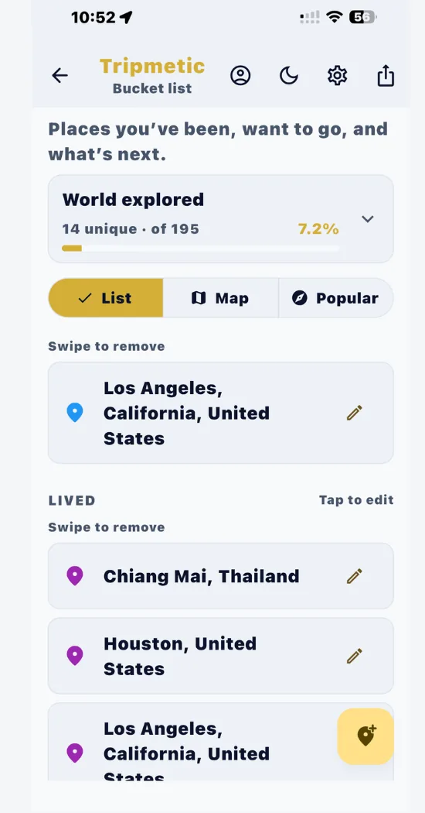
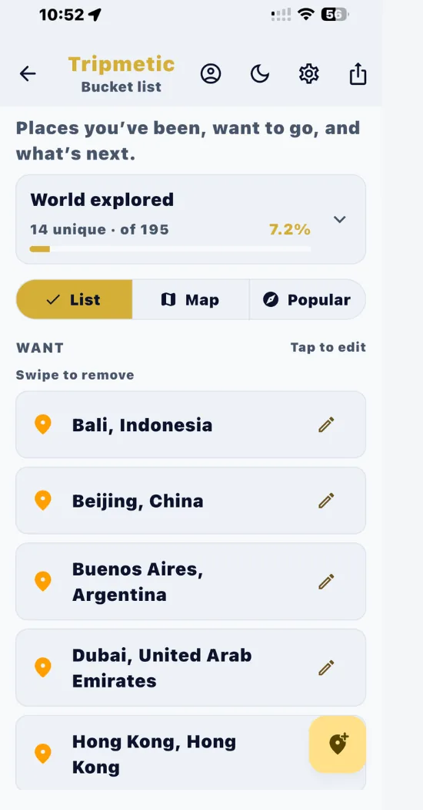
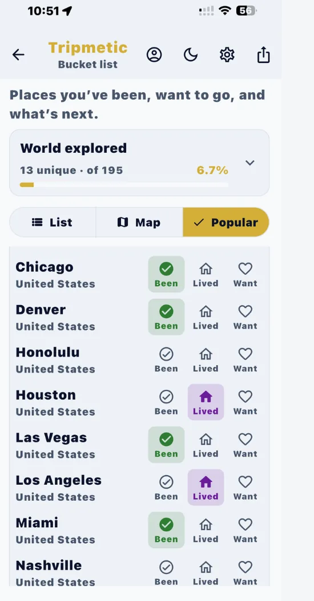
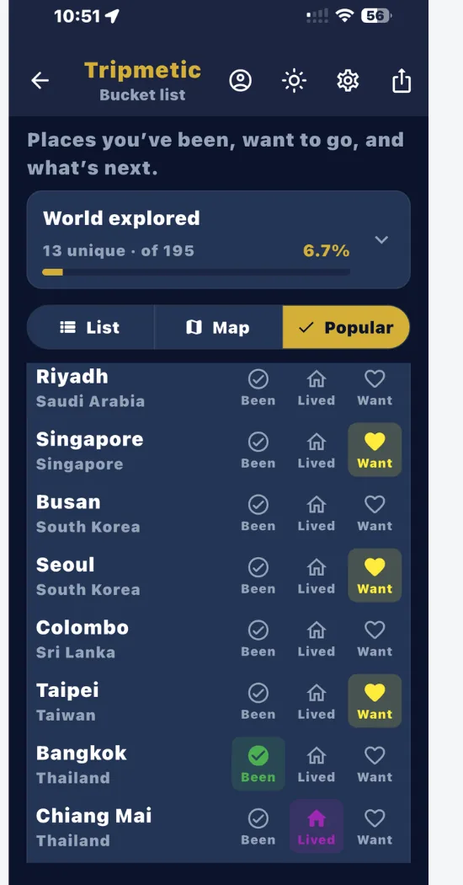
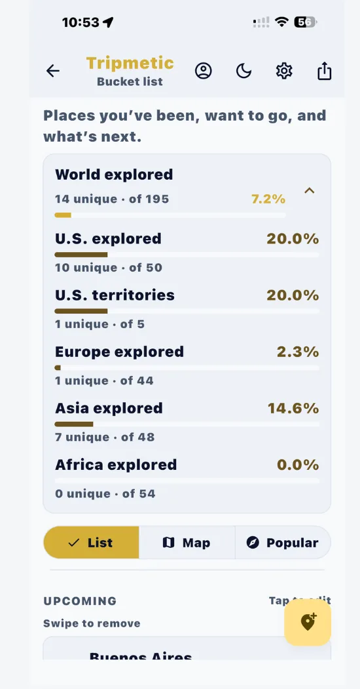
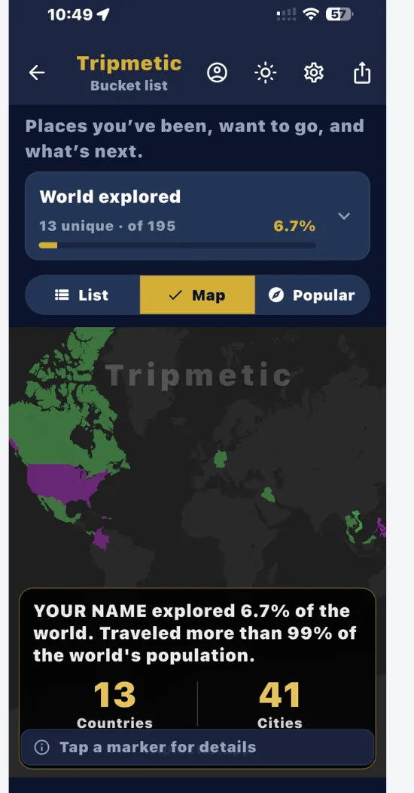

What is a bucket map?
A bucket map is a travel bucket list visualized on a world map—not a scattered notes list. In Tripmetic, you pin destinations as Been, Lived, or Want, then see your real footprint on an interactive map with countries-visited stats and a world-explored percentage.
Your travel history is more than names on a notepad. The Tripmetic bucket map turns that history into a clear visual record you can update offline—ideal before flights, in Airplane Mode, or between destinations.
From gamified exploration stats to custom destination categories, here’s how to track the countries you’ve visited and plan where you’ll go next.
1 The Dashboard & Travel Stats
When you open the Bucket List feature, you are greeted by your personal exploration dashboard. At the top, the World Explored progress bar calculates your exact travel stats by comparing your unique visited countries against the global total of 195. Expand this section to see a detailed percentage breakdown by continent (e.g., Europe Explored, Asia Explored).

2 Managing Your Lists
Use the List tab to view and edit all your saved destinations. The interface neatly organizes your entries into intuitive categories: Upcoming (planned trips with dates), Been (places you've visited), Lived (cities you've called home), and Want (future aspirations).
To edit a trip, tap the pencil icon. If your plans change or you entered a city by mistake, simply swipe left on the location card to instantly remove it from your records.

3 Discover with the 'Popular' Tab
Don't want to type out every single city you've visited manually? Tap over to the Popular tab. This discovery engine groups the top 50 global destinations into neat, expandable continent folders (North America, Europe, Asia, etc.).
Simply tap a region to expand it, and use the quick-action icons on the right side of the city name to instantly mark it as Been, Lived, or Want. Your lists and map will update instantly in the background.


4 Adding Custom Destinations
If you visited a remote village or a city not listed in the Popular tab, simply tap the floating action button (the yellow map pin with a plus sign) in the bottom right corner of the List tab. Here, you can type the specific City and Country, select your desired category, and hit save to add it to your personal database.

5 The Map: A Strict Record of Reality
Switch to the Map tab to view a stunning, interactive globe populated with your travel history. Tripmetic maps are designed with a strict philosophy: they are a record of reality, not wishful thinking.
When you look at your map, you will only see pins for places you have marked as Been, Live, or Lived. Destinations categorized as Want or Upcoming are intentionally filtered out to ensure your map remains a pristine, accurate representation of where you have actually stepped foot.

Frequently Asked Questions
We believe your map should be a satisfying visual reward for your actual travels. We intentionally filter out 'Want' and 'Upcoming' destinations so the map doesn't become cluttered with aspirations. It remains a strict, accurate footprint of reality.
Yes. Every time you tag a new, unique country as 'Been' or 'Lived', the app's internal calculator measures it against the global total of 195 recognized countries and updates your progress bar in real-time.
Absolutely. Tripmetic is designed to track countries visited offline. Your bucket list data, toggles, and base map tiles are cached securely on your device, allowing you to interact with your travel history anywhere in the world.
No. The bucket map is built into Tripmetic—the free travel app that also includes a smart currency converter, dual clock widget, multi-country budgets, packing lists, and more. Download once and use every tool.